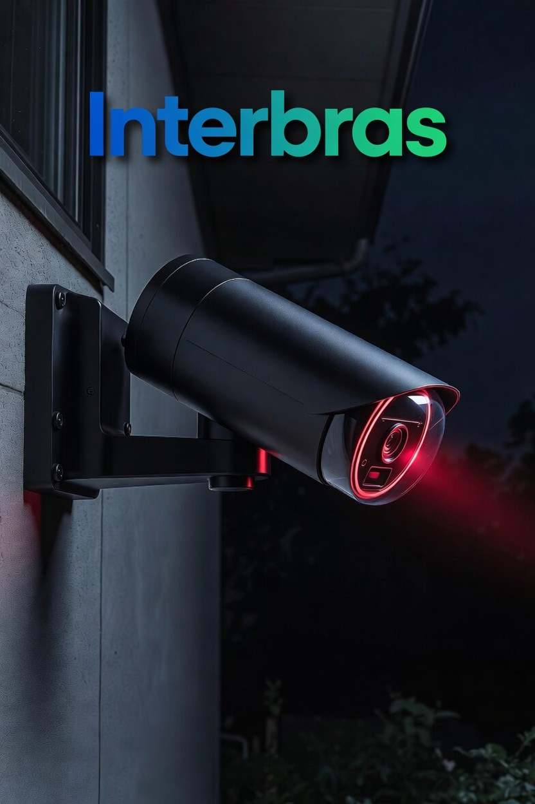

Câmeras de Segurança
Bem-vindo ao nosso site!
As câmeras de segurança são equipamentos essenciais para proteger residências, empresas e espaços públicos. Elas permitem monitorar ambientes em tempo real, gravar imagens e aumentar a sensação de segurança.
Hoje em dia, as câmeras utilizam tecnologias modernas como visão noturna, detecção de movimento e conexão via internet, permitindo que você acompanhe tudo pelo celular de qualquer lugar.
Por que usar câmeras de segurança?
- Prevenção de roubos e invasões
- Monitoramento remoto 24 horas
- Gravação de evidências
- Proteção da família e patrimônio